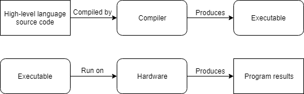
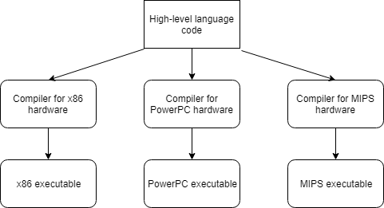

Modern computers are incredibly fast, and getting faster all the time. However, computers also have some significant constraints: they only natively understand a limited set of instructions, and must be told exactly what to do.
A computer program is a sequence of instructions that directs a computer to perform certain actions in a specified order. Computer programs are typically written in a programming language, which is a language designed to facilitate the writing of instructions for computers. There are many different programming languages available, each of which caters to a different set of needs. The act (and art) of writing a program is called programming. We’ll talk more specifically about how to create programs in C++ in upcoming lessons in this chapter.
When a computer is performing the actions described by the instructions in a computer program, we say it is running or executing the program. A computer will not begin execution of a program until told to do so. That typically requires the user to launch (or run or execute) the program, although programs may also be launched by other programs.
Programs are executed on the computer’s hardware, which consists of the physical components that make up a computer. Notable hardware found on a typical computing device includes:
- A CPU (central processing unit, often called the “brain” of the computer), which actually executes the instructions.
- Memory, where computer programs are loaded prior to execution.
- Interactive devices (e.g. a monitor, touch screen, keyboard, or mouse), which allow a person to interact with a computer.
- Storage devices (e.g. a hard drive, SSD, or flash memory), which retain information (including installed programs) even when the computer is turned off.
In contrast, the term software broadly refers to the programs on a system that are designed to be executed on hardware.
In modern computing, programs often interact with more than just hardware — they also interact with other software on the system (particularly the operating system). The term platform refers to a compatible set of hardware and software (OS, browser, etc…) that provides an environment for software to run. For example, the term “PC” is used colloquially to mean the platform consisting of a Windows OS running on an x86-family CPU.
Platforms often provide useful services for the programs running on them. For example, a desktop application might request the operating system give them a chunk of free memory, create a file over there, or play a sound. The running program doesn’t have to know how this is actually facilitated. If a program uses capabilities or services provided by the platform, it becomes dependent on that platform, and cannot be run on other platforms without modification. A program that can be easily transferred from one platform to another is said to be portable. The act of modifying a program so that it runs on a different platform is called porting.
Now that we’ve talked about programs, let’s discuss programming languages. This isn’t just a history lesson, we’ll also be introducing terminology that will come up in future lessons.
Machine Language
A computer’s CPU is incapable of understanding C++. Instead, CPUs are only capable of processing instructions written in machine language (or machine code). The set of all possible machine language instructions that a given CPU can understand is called an instruction set.
Here is a sample machine language instruction: 10110000 01100001.
Each instruction is understood by the CPU as a command to do a very specific job, such as “compare these two numbers”, or “copy this number into that memory location”. Back when computers were first invented, programmers had to write programs directly in machine language, which was a very difficult and time-consuming thing to do.
How these instructions are organized and interpreted is beyond the scope of this tutorial series, but it is worth noting a few things.
First, each instruction is composed of a sequence of 1s and 0s. Each individual 0 or 1 is called a binary digit, or bit for short. The number of bits in a machine language instruction varies — for example, some CPUs process instructions that are always 32 bits long, whereas some other CPUs (such as those from the x86 family, which you may be using) have instructions that can be a variable length.
Second, each family of compatible CPUs (e.g. x86, Arm64) has its own machine language, and this machine language is not compatible with the machine language of other CPU families. This means machine language programs written for one CPU family cannot be run on CPUs from a different family!
Related content
A “CPU family” is formally called an “instruction set architecture” (“ISA” for short). Wikipedia has a list of different CPU families here.
Assembly Languages
Machine language instructions (like 10110000 01100001) are ideal for a CPU, but are difficult for humans to understand. Since programs (at least historically) have been written and maintained by humans, it makes sense that programming languages should be designed with human needs in mind.
An assembly language (often called assembly for short) is a programming language that essentially functions as a more human-readable machine language. Here is the same instruction as above in x86 assembly language: mov al, 0x61.
Optional reading
This instruction illustrates many of the capabilities that make assembly more readable than machine language.
- The operation (what the instruction does) is identified by a short mnemonic (typically a 3-5 letter name).
movis easily understood to be a mnemonic for “move”, which is an operation that copies bits from one location to another. - Registers (fast memory locations that are part of the CPU itself) are accessed by a name.
alis the name of a specific register on an x86 CPU. - Numbers can be specified in a more convenient format. Assembly languages typically support both decimal numbers (e.g.
97) and hexadecimal numbers (e.g.0x61).
It is fairly easy to understand that the assembly instruction mov al, 0x61 copies hexadecimal number 0x61 into the al CPU register.
Since CPUs do not understand assembly language, assembly programs must be translated into machine language before they can be executed. This translation is done by a program called an assembler. Because each assembly language instruction is typically designed to mirror an equivalent machine language instruction, the translation process is typically straightforward.
Just like each CPU family has its own machine language, each CPU family also has its own assembly language (which is designed to be assembled into machine language for that same CPU family). This means there are many different assembly languages. Although conceptually similar, different assembly languages support different instructions, use different naming conventions, etc…
Introduction to low-level languages
Machine languages and assembly languages are considered low-level languages, as these languages provide minimal abstraction from the architecture of the machine. In other words, the programming language itself is tailored to the specific instruction set architecture it will be run on.
Low-level languages have a number of notable downsides:
- Programs written in a low-level language are not portable. Since a low-level language is tailored to a specific instruction set architecture, the programs written in the language are too. Porting such programs to other architectures is typically non-trivial.
- Writing a program in a low-level language requires detailed knowledge of the architecture itself. For instance, the instruction
mov al, 061hrequires knowing thatalrefers to a CPU register available on this specific platform, and understanding how to work with that register. On a different architecture, this register might be named something different, have different limitations, or not exist at all. - Low-level programs are hard to understand. While individual assembly instructions can be quite understandable, it can still be hard to deduce what a section of assembly code is actually doing. And since assembly programs require many instructions to do even simple tasks, they tend to be quite long
- It is hard to write assembly programs of significant complexity because the language only provides primitive capabilities. The programmer is left to implement everything they need themselves.
The primary benefit of low-level languages is that they are fast. Assembly is still used today when there are sections of code that are performance critical. And it’s also used in a few other cases, one of which we’ll discuss in a moment.
Introduction to high-level Languages
To address many of the above downsides, new “high-level” programming languages such as C, C++, Pascal (and later, languages such as Java, Javascript, and Perl) were developed.
Here is the same instruction as above in C/C++: a = 97;.
Much like assembly programs (which must be assembled to machine language), programs written in a high-level language must be translated into machine language before they can be run. There are two primary ways this is done: compiling and interpreting.
C++ programs are usually compiled. A compiler is a program (or collection of programs) that reads the source code of one language (usually a high-level language) and translates it into another language (usually a low-level language). For example, a C++ compiler translates C++ source code into machine code.
Optional reading
Most C++ compilers can also be configured to generate assembly code. This is useful when a programmer wants to see what specific instructions the compiler is generating for a section of the program.
The machine code output by the compiler can then be packaged into an executable file (containing machine language instructions) that can distributed to others and launched by the operating system. Notably, running the executable file does not require the compiler to be installed.
In the beginning, compilers were primitive and produced slow, unoptimized assembly or machine code. However, over the years, compilers have become very good at producing fast, optimized code, and in some cases can do a better job than humans can!
Here is a simplified representation of the compiling process:

Alternatively, an interpreter is a program that directly executes the instructions in the source code without requiring them to be compiled first. Interpreters tend to be more flexible than compilers, but are less efficient when running programs because the interpreting process needs to be done every time the program is run. This also means the interpreter must be installed on every machine where an interpreted program will be run.
Here is a simplified representation of the interpretation process:
Optional reading
A good comparison of the advantages of compilers vs interpreters can be found here.
Another advantage of compiled programs is that distributing a compiled program does not require distributing the source code. In a non-open-source environment, this is important for intellectual property (IP) protection purposes.
Most high-level languages can be either compiled or interpreted. Traditionally, high-level languages like C, C++, and Pascal are compiled, whereas “scripting” languages like Perl and Javascript tend to be interpreted. Some languages, like Java, use a mix of the two. We’ll explore C++ compilers in more detail shortly.
The benefits of high-level languages
High-level languages are named as such because they provide a high level of abstraction from the underlying architecture.
Consider the instruction a = 97;. This instruction lets us store the value 97 somewhere in memory, without needing to know exactly where that value will be placed, or what specific machine code instruction is needed by the CPU to store that value. In fact, there is nothing platform-specific about this instruction at all. The compiler does all the work to figure out how this C++ instruction translates into platform-specific machine code.
High-level languages allow programmers to write programs without knowing much about the platform it will be run on. This not only makes programs easier to write, it also makes them significantly more portable. If we’re careful, we can write a single C++ that will compile on every platform that has a C++ compiler! A program that is designed to run on multiple platforms is said to be cross-platform.

For advanced readers
The following is a partial list of things that can inhibit the portability of your C++ code:
- Many operating systems, such as Microsoft Windows, offer platform-specific capabilities that you can use in your code. These can make it much easier to write a program for a specific operating system, or provide deeper integration with that operating system than would otherwise be possible.
- Many third-party libraries are only available on certain platforms. If you use one of these, you will be limited to the platforms for which that library is supported.
- Some compilers support compiler-specific extensions, which are capabilities that are only available in that compiler. If you use these, your programs won’t be able to be compiled by other compilers that don’t support the same extensions without modification. We’ll talk more about these later, once you’ve installed a compiler.
- In certain cases, the C++ language allows the compiler to determine how something should behave. We discuss this further in lesson 1.6 — Uninitialized variables and undefined behavior under “implementation-defined behavior”.
If you’re only targeting a single platform, then portability may not matter that much. But many applications these days target multiple platforms in order to widen their reach. For example, a mobile app will probably want to target both iOS and Android.
Even if portability doesn’t seem useful initially, many applications that initially targeted a single platform (e.g. PC) decided to port to other platforms (e.g. Mac and various consoles) after seeing some level of success and interest. If you don’t start with portability in mind, it will be more work to port your application later.
In these tutorials, we will avoid platform-specific code as much as possible, so that our programs will run on any platform that has a modern C++ compiler.
High-level languages have other benefits as well:
- Programs written in a high-level language are easier to read, write, and learn because their instructions more closely resemble the natural language and mathematics that we use every day. In many cases, high-level languages require fewer instructions to perform the same tasks as low-level languages. For example, in C++ you can write
a = b * 2 + 5;in one line. In assembly language, this would take 4 to 6 different instructions. This makes programs written using high-level languages more concise, which makes them easier to understand. - High-level languages typically include additional capabilities that make it easier to perform common programming tasks, such as requesting a block of memory or manipulating text. For example, it only takes a single instruction to determine whether the characters “abc” exist within a large block of text (and if so, how many characters has to be examined until “abc” was found). This can dramatically reduce complexity and development times.
Nomenclature
Although C++ is technically considered a high-level language, newer programming languages (e.g. scripting languages) provide an even higher level of abstraction. As such, C++ is sometimes inaccurately called a “low-level language” in comparison.
Author’s note
Today, C++ would probably be more accurately described as a mid-level language. However, this also highlights one of C++’s key strengths: it often provides the ability to work at different levels of abstraction. You can choose to operate at a lower level for better performance and precision, or at a higher level for greater convenience and simplicity.
Rules, Best practices, and warnings
As we proceed through these tutorials, we’ll highlight many important points under the following three categories:
Rule
Rules are instructions that you must do, as required by the language. Failure to abide by a rule will generally result in your program not working.
Best practice
Best practices are things that you should do, because that way of doing things is either conventional (idiomatic) or recommended. That is, either everybody does it that way (and if you do otherwise, you’ll be doing something people don’t expect), or it is generally superior to the alternatives.
Warning
Warnings are things that you should not do, because they will generally lead to unexpected results.